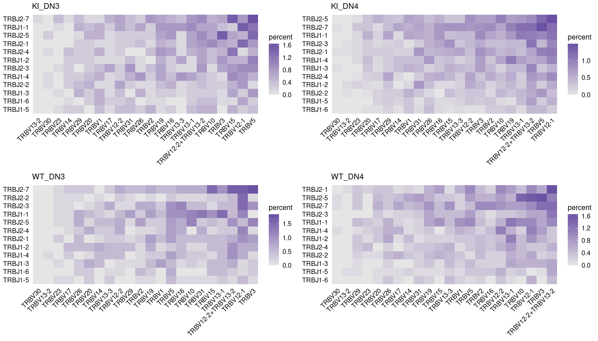

The djvdj package provides a range of tools to analyze and manipulate single cell V(D)J sequencing data. These tools are straightforward and easily integrate into a standard Seurat workflow. This is a work in progress, please report any bugs by opening a new issue.
Installation
You can install the development version of djvdj from GitHub with:
devtools::install_github("rnabioco/djvdj")Import
With djvdj you can import V(D)J sequencing results from Cell Ranger and add these data to a Seurat or SingleCellExperiment object using import_vdj(). Additional functions are provided to filter and modify (filter_vdj(), mutate_vdj(), summarize_vdj()) the object based on V(D)J metrics including chains, clonotypes, and CDR3 sequences.
library(djvdj)
# Import VDJ data
# A vector of paths can be provided to load multiple datasets
# If prefixes were added to the cell barcodes when the object was generated,
# include these as the vector names
vdj_dirs <- c(
BL6 = system.file("extdata/splen/BL6_BCR", package = "djvdj"),
MD4 = system.file("extdata/splen/MD4_BCR", package = "djvdj")
)
# Add V(D)J data to object
so <- import_vdj(splen_so, vdj_dir = vdj_dirs)Calculate
djvdj allows you to calculate a range of population diversity and similarity metrics implemented with the abdiv package. The function calc_diversity() can be used to measure diversity on a per-cluster or per-sample basis to allow for comparison across conditions. calc_similarity() will measure repertoire overlap between clusters or samples to allow for direct comparisons between cells of interest. Additional functions are also available to calculate clonotype abundances and V(D)J gene usage (calc_frequency(), calc_gene_usage()).
so <- calc_diversity(
input = so, # Seurat object
data_col = "clonotype_id", # Column containing clonotypes
cluster_col = "orig.ident", # Column containing cell clusters to compare
method = abdiv::simpson # Diversity metric to use
)Plot
For each ‘calc’ function, djvdj also provides a corresponding ‘plot’ function to summarize the results.
# Compare the usage of different V and J genes
plot_gene_usage(
input = so, # Seurat object
data_cols = c("v_gene", "j_gene"), # Column(s) containing V(D)J genes to plot
cluster_col = "orig.ident", # Column containing cell clusters to compare
chain = "IGK", # Chain to plot
plot_colors = "#6A51A3"
)